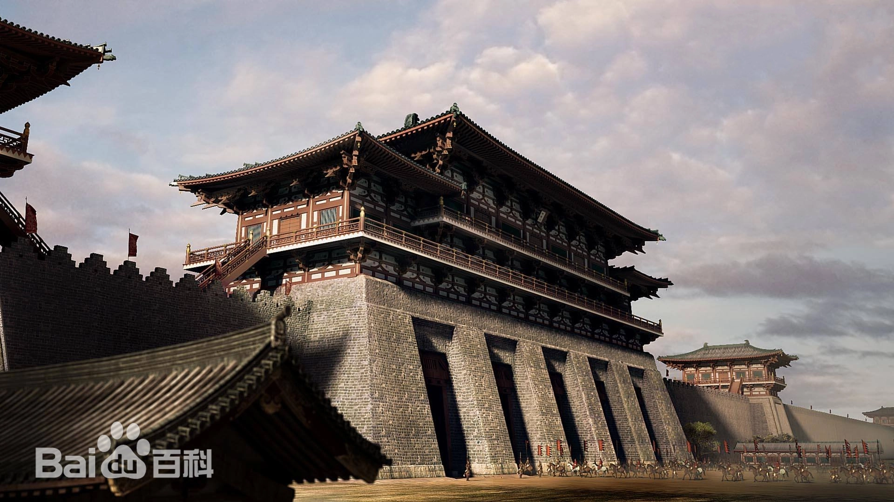
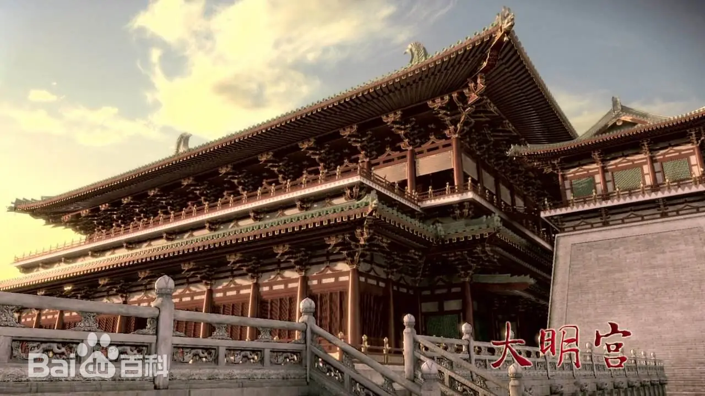
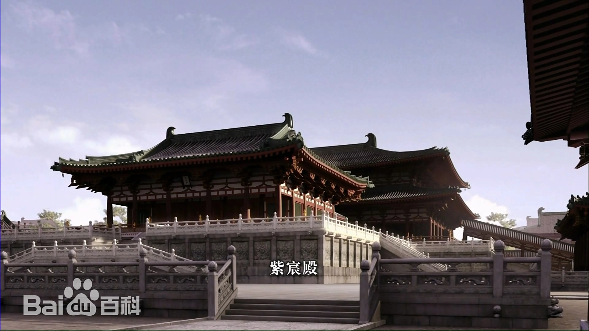
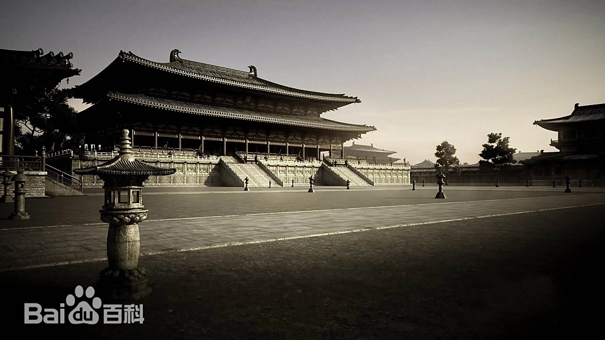

大明宫




历史沿革
大明宫，大唐帝国的大朝正宫，唐朝的政治中心和国家象征 ，位于唐京师长安（今西安）北侧的龙首原 ，是唐长安 城三座主要宫殿“三大内”（大明宫、太极宫、兴庆宫）中 规模最大的一座，称为“东内”。自唐高宗起，先后有17位 唐朝皇帝在此处理朝政，历时达240余年 。大明宫是唐帝国 最宏伟壮丽的宫殿建筑群，也是当时世界上面积最大的宫殿建筑群。
建筑成就
大明宫始建于唐太宗贞观八年（634年），占地面积约3.2平方千米 ，整个宫域可分为前朝和内庭两部分，前朝以朝会为主，内庭以居 住和宴游为主。前朝的中心为含元殿（外朝）、宣政殿（中朝）、 紫宸殿（内朝），内庭有太液池，各种别殿、亭、观等30余所。
核心特色
1961年3月4日，大明宫遗址被中华人民共和国国务院公布为第一 批全国重点文物保护单位。2009年9月9日，史诗纪录片《大明宫 》在联合国总部首映，开创了中国电影在联合国首映的先河 。2 010年，西安市在大明宫原址建立大明宫国家遗址公园 。2014年 6月22日，大明宫遗址作为“丝绸之路：长安-天山廊道的路网”中 的一处遗址点成功列入《世界遗产名录》。2021年10月18日，大 明宫遗址入选“百年百大考古发现”。